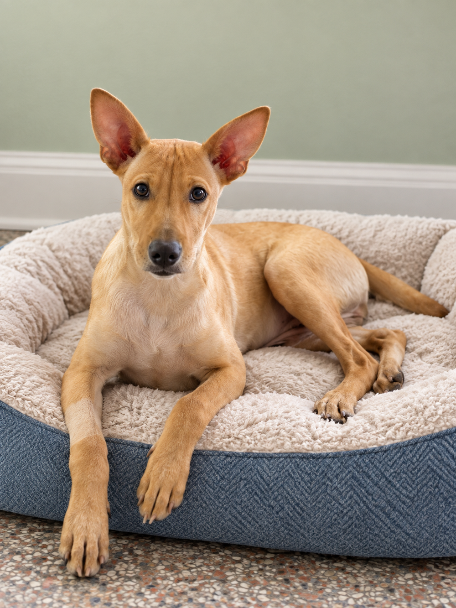
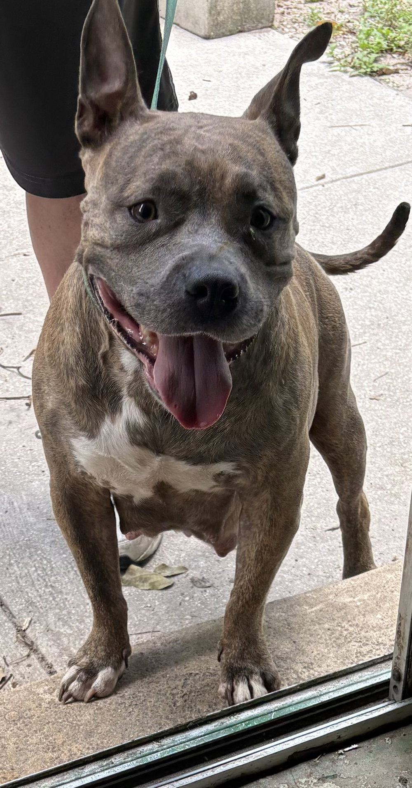
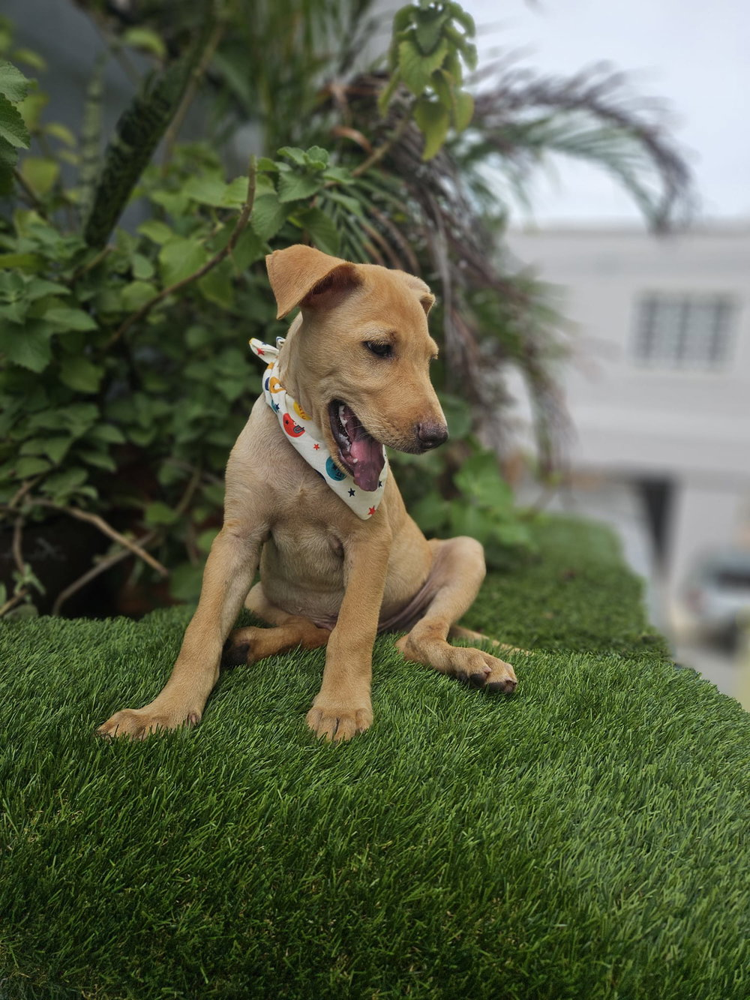

New arrivalServing pets across Central Florida since 1986
Your new best friend is waiting.
Meet loving dogs and cats ready for their next chapter. We’ll help you find the right fit for your home and family.

No-kill rescueEvery life matters
Sanford, FloridaServing Central Florida
Right pet, right homeThoughtful matching
501(c)(3) nonprofitCommunity supported
Ready to meet them?
Pets looking for love
Foster home

Keep exploringYour match might be next
Browse every available dog and cat, including seniors and special-needs pets.
View all pets →A thoughtful match
Adoption is a journey. We’re here for every step.
Our goal isn’t the fastest adoption—it’s the right home for every animal and the right companion for every family.
Read our adoption guide- 1
Find a pet
Browse profiles and learn who may fit your life.
- 2
Apply online
Tell us about your home, family, and experience.
- 3
Meet your match
Our team reviews your application and arranges a visit.
- 4
Welcome them home
Complete the adoption and begin your life together.
More ways to help
Every person can change a life.
Adoption is only one way to make a difference. Give time, open your home, or help provide lifesaving care.
08Nov
Upcoming community event
Sanford Food Truck Fiesta: Pints & Paws
Meet adoptable pets, connect with the PRBJ team, and enjoy an afternoon in downtown Sanford.
1–6 PM · West End Trading Company · Sanford, FL